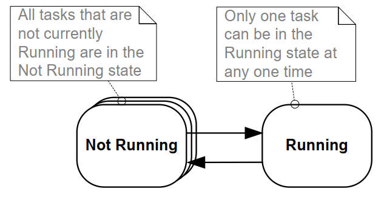

4 任务管理
4.1 简介
4.1.1 范围
本章涵盖：
- FreeRTOS 如何为应用中的每个任务分配处理时间。
- FreeRTOS 如何选择在任意时间点执行哪个任务。
- 每个任务的相对优先级如何影响系统行为。
- 任务可以存在的状态。
本章还讨论：
- 如何实现任务。
- 如何创建一个或多个任务实例。
- 如何使用任务参数。
- 如何更改已创建任务的优先级。
- 如何删除任务。
- 如何使用任务实现周期性处理。（后续章节将描述如何使用软件定时器实现相同功能。）
- 空闲任务何时执行以及如何使用它。
本章介绍的概念是理解如何使用 FreeRTOS 以及 FreeRTOS 应用程序行为的基础。因此，这是本书中最详细的章节。
4.2 任务函数
任务以 C 函数的形式实现。任务必须实现预期的函数原型，如清单 4.1 所示，该函数接受一个 void 指针参数并返回 void。
void vATaskFunction( void * pvParameters );
清单 4.1 任务函数原型
每个任务本身就是一个小程序。它有一个入口点，通常会在无限循环中运行，并且不会退出。清单 4.2 显示了一个典型任务的结构。
FreeRTOS 任务不得以任何方式从实现它的函数返回。它不得包含 'return' 语句，也不得允许执行超出其实现函数的末尾。如果不再需要任务，应显式删除它，如清单 4.2 所示。
单个任务函数定义可用于创建任意数量的任务，其中每个创建的任务是一个独立的执行实例。每个实例都有自己的堆栈，因此也有任务本身定义的任何自动（堆栈）变量的副本。
void vATaskFunction( void * pvParameters )
{
/*
* Stack-allocated variables can be declared normally when inside a function.
* Each instance of a task created using this example function will have its
* own separate instance of lStackVariable allocated on the task's stack.
*/
long lStackVariable = 0;
/*
* In contrast to stack allocated variables, variables declared with the `static`
* keyword are allocated to a specific location in memory by the linker.
* This means that all tasks calling vATaskFunction will share the same
* instance of lStaticVariable.
*/
static long lStaticVariable = 0;
for( ;; )
{
/* The code to implement the task functionality will go here. */
}
/*
* If the task implementation ever exits the above loop, then the task
* must be deleted before reaching the end of its implementing function.
* When NULL is passed as a parameter to the vTaskDelete() API function,
* this indicates that the task to be deleted is the calling (this) task.
*/
vTaskDelete( NULL );
}
清单 4.2 典型任务函数的结构
4.3 顶级任务状态
一个应用程序可能由许多任务组成。如果运行应用程序的处理器只有一个核心，那么在任何给定时刻只有一个任务可以执行。这意味着一个任务可能处于两种状态之一：运行中和未运行。首先考虑这种简单的模型。稍后在本章中，我们将描述未运行状态的几种子状态。
当处理器正在执行某个任务的代码时，该任务处于运行中状态。当任务处于未运行状态时，任务被暂停，其状态已被保存，以便在调度程序决定它应该再次进入运行中状态时恢复执行。当任务恢复执行时，它将从它在离开运行中状态之前要执行的指令处继续执行。

图 4.1 顶级任务状态和转换从未运行状态转换到运行中状态的任务被称为“切换到”或“调入”。相反，从运行中状态转换到未运行状态的任务被称为“切换出”或“调出”。只有调度程序可以将任务切换进出运行中状态。
4.4 任务创建
可以使用六个 API 函数来创建任务：
xTaskCreate(),
xTaskCreateStatic(),
xTaskCreateRestricted(),
xTaskCreateRestrictedStatic(),
xTaskCreateAffinitySet()，和
xTaskCreateStaticAffinitySet()
每个任务需要两个 RAM 块：一个用于保存其任务控制块（TCB），一个用于存储其堆栈。FreeRTOS API 函数名称中带有“Static”的函数使用在运行时从系统堆中动态分配所需 RAM。
某些 FreeRTOS 移植版支持以“受限”或“特权”模式运行的任务。API 函数名称中带有“Restricted”的 FreeRTOS 函数创建的任务在访问系统内存时受到限制。没有“Restricted”的 API 函数创建的任务在“特权模式”下执行，可以访问系统的整个内存映射。
支持对称多处理（SMP）的 FreeRTOS 移植版允许不同的任务在同一 CPU 的多个核心上同时运行。对于这些移植版，可以通过使用名称中带有“Affinity”的函数来指定任务将在其上运行的核心。
FreeRTOS 任务创建 API 函数相当复杂。本文档中的大多数示例使用 xTaskCreate()，因为它是最简单的函数。
4.4.1 xTaskCreate() API 函数
清单 4.3 显示了 xTaskCreate() API 函数原型。
xTaskCreateStatic() 有两个额外的参数，指向预分配的内存，以保存任务的数据结构和堆栈，分别。第 2.5 节：数据类型和编码风格指南
描述了使用的数据类型和命名约定。
BaseType_t xTaskCreate( TaskFunction_t pvTaskCode,
const char * const pcName,
configSTACK_DEPTH_TYPE usStackDepth,
void * pvParameters,
UBaseType_t uxPriority,
TaskHandle_t * pxCreatedTask );
清单 4.3 xTaskCreate() API 函数原型
xTaskCreate() 参数和返回值：
pvTaskCode
任务只是永不退出的 C 函数，通常在无限循环中实现。pvTaskCode 参数只是指向实现任务的函数的指针（实际上，只是函数的名称）。
pcName
任务的描述性名称。FreeRTOS 不以任何方式使用它，它仅作为调试工具。通过可读性强的名称识别任务，比通过句柄识别任务要简单得多。
应用程序定义的常量 configMAX_TASK_NAME_LEN 定义了任务名称的最大长度，包括 NULL 终止符。提供更长字符串会导致字符串被截断。
usStackDepth
指定分配给任务使用的堆栈的大小。改用 xTaskCreateStatic() 而不是 xTaskCreate()，以使用预分配的内存，而不是在运行时动态分配内存。
请注意，该值指定堆栈可以容纳的字数，而不是字节数。例如，如果堆栈宽度为 32 位，usStackDepth 为 128，则 xTaskCreate() 分配 512 字节的堆栈空间（128 * 4 字节）。
configSTACK_DEPTH_TYPE 是一个宏，允许应用程序编写者指定用于保存堆栈大小的数据类型。如果将 configSTACK_DEPTH_TYPE 保留未定义，则默认为 uint16_t，因此如果堆栈深度乘以堆栈宽度大于 65535（最大可能的 16 位数字），请在 FreeRTOSConfig.h 中将 configSTACK_DEPTH_TYPE 定义为 unsigned long 或 size_t。
第 13.3 节 堆栈溢出 描述了选择最佳堆栈大小的实用方法。
pvParameters
实现任务的函数接受一个单一的 void 指针（void *）参数。pvParameters 是传递给任务的使用该参数的值。
uxPriority
定义任务的优先级。0 是最低优先级，(configMAX_PRIORITIES – 1) 是最高优先级。第 4.5 节
描述了用户定义的 configMAX_PRIORITIES 常量。
如果定义的 uxPriority 大于 (configMAX_PRIORITIES – 1)，则将其限制为 (configMAX_PRIORITIES – 1)。
pxCreatedTask
指向存储创建的任务句柄位置的指针。此句柄可用于将来的 API 调用，例如，改变任务的优先级或删除任务。
pxCreatedTask 是一个可选参数，如果不需要任务句柄，则可以将其设置为 NULL。
- 返回值
有两个可能的返回值：
-
pdPASS表示任务创建成功。
-
pdFAIL表示没有足够的堆内存可用于创建任务。第 3 章 提供有关堆内存管理的更多信息。
示例 4.1 创建任务
以下示例演示了创建两个简单任务的步骤，然后启动新创建的任务。任务通过使用粗略的忙等待循环来定期打印字符串。两个任务以相同的优先级创建，除了要打印的字符串不同外，它们是相同的——请参见清单 4.4 和清单 4.5 以获取各自的实现。有关在任务中使用 printf() 的警告，请参见第 8 章。
void vTask1( void * pvParameters )
{
/* ulCount is declared volatile to ensure it is not optimized out. */
volatile unsigned long ulCount;
for( ;; )
{
/* Print out the name of the current task task. */
vPrintLine( "Task 1 is running" );
/* Delay for a period. */
for( ulCount = 0; ulCount < mainDELAY_LOOP_COUNT; ulCount++ )
{
/*
* This loop is just a very crude delay implementation. There is
* nothing to do in here. Later examples will replace this crude
* loop with a proper delay/sleep function.
*/
}
}
}
清单 4.4 示例 4.1 中第一个任务的实现
void vTask2( void * pvParameters )
{
/* ulCount is declared volatile to ensure it is not optimized out. */
volatile unsigned long ulCount;
/* As per most tasks, this task is implemented in an infinite loop. */
for( ;; )
{
/* Print out the name of this task. */
vPrintLine( "Task 2 is running" );
/* Delay for a period. */
for( ulCount = 0; ulCount < mainDELAY_LOOP_COUNT; ulCount++ )
{
/*
* This loop is just a very crude delay implementation. There is
* nothing to do in here. Later examples will replace this crude
* loop with a proper delay/sleep function.
*/
}
}
}
清单 4.5 示例 4.1 中第二个任务的实现
main() 函数在启动调度程序之前创建任务——请参见清单 4.6 以获取其实现。
int main( void )
{
/*
* Variables declared here may no longer exist after starting the FreeRTOS
* scheduler. Do not attempt to access variables declared on the stack used
* by main() from tasks.
*/
/*
* Create one of the two tasks. Note that a real application should check
* the return value of the xTaskCreate() call to ensure the task was
* created successfully.
*/
xTaskCreate( vTask1, /* Pointer to the function that implements the task.*/
"Task 1",/* Text name for the task. */
1000, /* Stack depth in words. */
NULL, /* This example does not use the task parameter. */
1, /* This task will run at priority 1. */
NULL ); /* This example does not use the task handle. */
/* Create the other task in exactly the same way and at the same priority.*/
xTaskCreate( vTask2, "Task 2", 1000, NULL, 1, NULL );
/* Start the scheduler so the tasks start executing. */
vTaskStartScheduler();
/*
* If all is well main() will not reach here because the scheduler will now
* be running the created tasks. If main() does reach here then there was
* not enough heap memory to create either the idle or timer tasks
* (described later in this book). Chapter 3 provides more information on
* heap memory management.
*/
for( ;; );
}
清单 4.6 启动示例 4.1 任务
执行示例会产生图 4.2 中所示的输出。
C:\Temp>rtosdemo
Task 1 is running
Task 2 is running
Task 1 is running
Task 2 is running
Task 1 is running
Task 2 is running
Task 1 is running
Task 2 is running
Task 1 is running
Task 2 is running
Task 1 is running
Task 2 is running
Task 1 is running
Task 2 is running
图 4.2 执行示例 4.1 时产生的输出[^4]
[^4]: 屏幕截图显示每个任务仅打印一次消息。 这是一个人 通过使用 FreeRTOS Windows 模拟器而产生的人工场景。 Windows 模拟器并非真正的实时。 此外，写入 Windows 控制台需要相对较长的时间，并导致一系列 Windows 系统调用。 在具有快速且非阻塞打印功能的真实嵌入式目标上执行相同代码可能会导致 每个任务打印其字符串多次，然后才被切换出去 允许其他任务运行。
图 4.2 显示了两个任务似乎同时执行；但是，两个任务在同一处理器核心上执行，因此不可能是这样。 实际上，两个任务正在快速进出 运行中状态。 两个任务以相同的优先级运行，因此共享 同一处理器核心的时间。 图 4.3 显示了它们的实际执行 模式。
底部的箭头表示从时间 t1 开始的时间流逝。 彩色线条显示了每个时刻正在执行的任务——例如，任务 1 在 t1 和 t2 之间执行。
在任何一个时刻，只有一个任务可以处于运行中状态。 因此，当一个 任务进入运行中状态（任务被调入）时，另一个任务 进入未运行状态（任务被调出）。